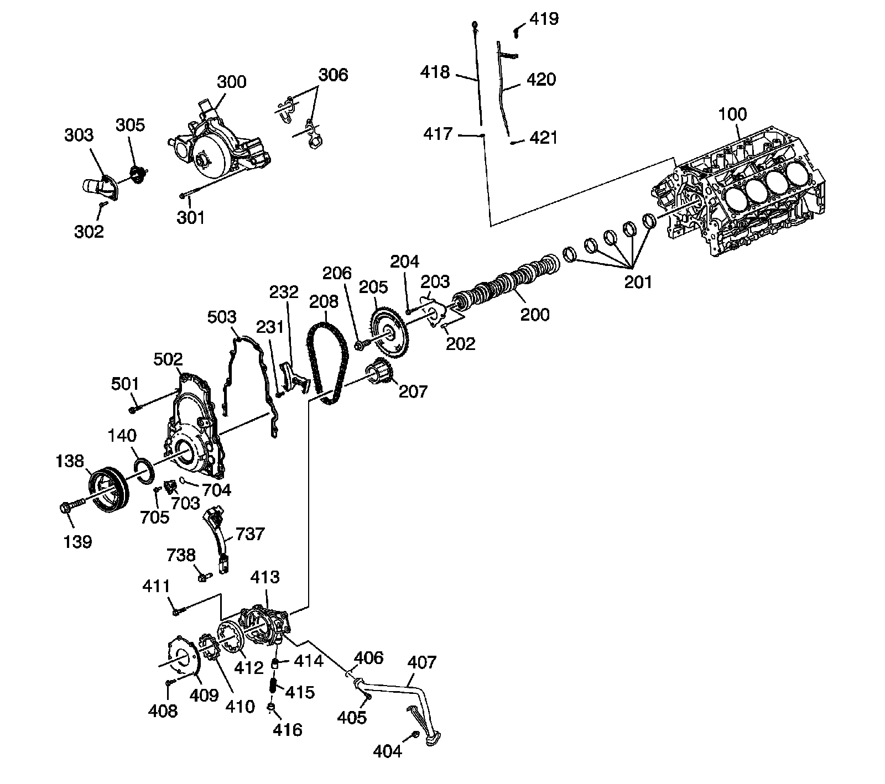
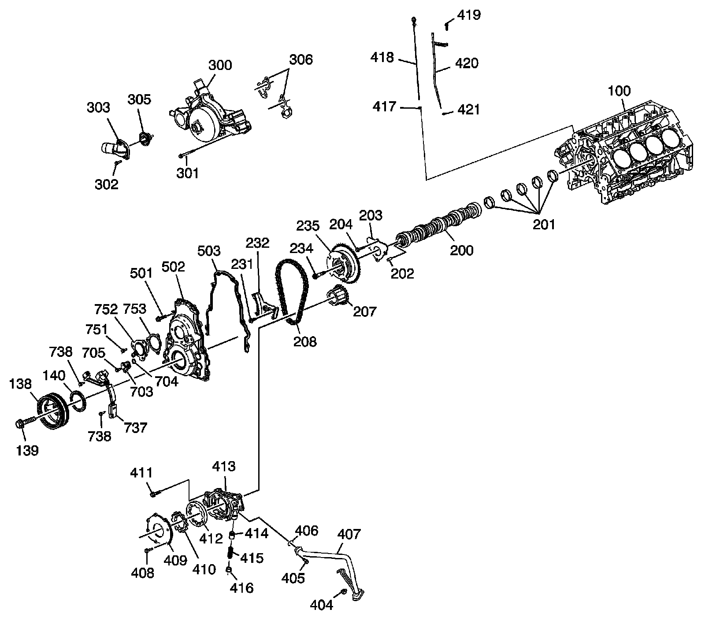

Front of Engine
Disassembled Views
Front of Engine - RPO LY2/LC9/LY5/LMG

100 - Engine Block
138 - Crankshaft Balancer
139 - Crankshaft Balancer Bolt
140 - Crankshaft Front Oil Seal
200 - Camshaft
201 - Camshaft Bearing
202 - Camshaft Sprocket Locating Pin
203 - Camshaft Retainer
204 - Camshaft Retainer Bolt
205 - Camshaft Sprocket
206 - Camshaft Sprocket Bolt
207 - Crankshaft Sprocket
208 - Timing Chain
231 - Timing Chain Tensioner Bolt
232 - Timing Chain Tensioner
300 - Water Pump
301 - Water Pump Bolt
302 - Water Pump Inlet Bolt
303 - Water Pump Inlet
305 - Engine Coolant Thermostat
306 - Water Pump Gasket
404 - Oil Pump Suction Pipe Nut
405 - Oil Pump Suction Pipe Bolt
406 - Oil Pump O-Ring Seal
407 - Oil Pump Suction Pipe
408 - Oil Pump Cover Bolt
409 - Oil Pump Cover
410 - Oil Pump Drive Gear
411 - Oil Pump Bolt
412 - Oil Pump Driven Gear
413 - Oil Pump
414 - Oil Pressure Relief Valve
415 - Oil Pressure Relief Valve Spring
416 - Oil Pressure Relief Valve Bore Plug
417 - Oil Level Indicator O-Ring Seal
418 - Oil Level Indicator
419 - Oil Level Indicator Tube Bolt
420 - Oil Level Indicator Tube
421 - O-Ring
501 - Engine Front Cover Bolt
502 - Engine Front Cover
503 - Engine Front Cover Gasket
703 - Camshaft Position (CMP) Sensor
704 - CMP Sensor O-Ring Seal
705 - CMP Sensor Bolt
737 - CMP Sensor Wire Harness Assembly
738 - CMP Sensor Wire Harness Assembly Bolt
Front of Engine - RPO LY6/L76/L92

100 - Engine Block
138 - Crankshaft Balancer
139 - Crankshaft Balancer Bolt
140 - Crankshaft Front Oil Seal
200 - Camshaft
201 - Camshaft Bearing
202 - Camshaft Sprocket Locating Pin
203 - Camshaft Retainer
204 - Camshaft Retainer Bolt
207 - Crankshaft Sprocket
208 - Timing Chain
231 - Timing Chain Tensioner Bolt
232 - Timing Chain Tensioner
234 - Camshaft Position (CMP) Actuator Solenoid Valve
235 - CMP Actuator
300 - Water Pump
301 - Water Pump Bolt
302 - Water Pump Inlet Bolt
303 - Water Pump Inlet
305 - Engine Coolant Thermostat
306 - Water Pump Gasket
404 - Oil Pump Suction Pipe Nut
405 - Oil Pump Suction Pipe Bolt
406 - Oil Pump O-Ring Seal
407 - Oil Pump Suction Pipe
408 - Oil Pump Cover Bolt
409 - Oil Pump Cover
410 - Oil Pump Drive Gear
411 - Oil Pump Bolt
412 - Oil Pump Driven Gear
413 - Oil Pump
414 - Oil Pressure Relief Valve
415 - Oil Pressure Relief Valve Spring
416 - Oil Pressure Relief Valve Bore Plug
417 - Oil Level Indicator O-Ring Seal
418 - Oil Level Indicator
419 - Oil Level Indicator Tube Bolt
420 - Oil Level Indicator Tube
421 - O-Ring
501 - Engine Front Cover Bolt
502 - Engine Front Cover
503 - Engine Front Cover Gasket
703 - CMP Sensor
704 - CMP Sensor O-Ring Seal
705 - CMP Sensor Bolt
737 - CMP Sensor Wire Harness Assembly
738 - CMP Sensor Wire Harness Assembly Bolt
738 - CMP Sensor Wire Harness Assembly Bolt
751 - CMP Actuator Hub Cover Bolt
752 - CMP Actuator Magnet
753 - CMP Actuator Magnet Gasket